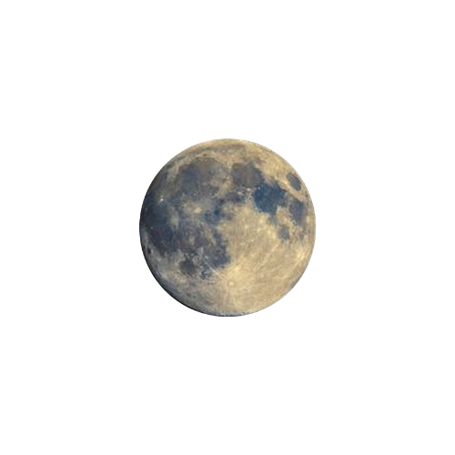

Startseite
Über uns
Reiseziele
Planeteninformationen
Impressum
Unsere Reiseangebote
Der Mond
Gar nicht mal so weit von uns entfernt liegt ein Ort, an den ich mein Herz verloren habe! Täglich sieht man in den sozialen Netzwerken Bilder von weiten, kargen Landschaften, die einfach verzaubern. Als wäre die Szenerie nicht schon magisch genug, fliegen hunderte Raumschiffe durch die Luft. Glaubt mir: Der Mond hält die eine oder andere wunderschöne Überraschung im Interplanetaren Urlaub für euch bereit. Wenn das nun bei Ihnen die Urlaubsstimmung geweckt hat, zögern sie nicht lange und gehen buchen sie noch heute Ihren Traumurlaub in unserem
Spitzenhotel

Die Venus
Die Venus ist für viele von uns Sehnsuchtsziel Nummer 1 – gerade die Nationalparks mit ihrer unglaublichen Natur haben es uns angetan. Wer träumt nicht davon, sich einfach ins Shuttle zu setzen und an einen unglaublich schönen See mit einer malerischen Bergkulisse im Hintergrund zu fahren und dort den Tag zu verbringen? Mit seiner lebendigen Atmosphäre und der einmaligen Natur hat das Land für jeden etwas zu bieten. Bei so viel Auswahl solltet ihr euch am besten vorher ein paar Tipps einholen und euren Trip gut planen. Wenn das nun bei Ihnen die Urlaubsstimmung geweckt hat, zögern sie nicht lange und gehen buchen sie noch heute Ihren Traumurlaub in unserem
Spitzenhotel
Tatooine
Einsame, lange Sandstrände, Palmen und mit einer Kokosnuss in der Hand entspannt ihr in einer Hängematte und tut nichts anderes, als eure Seele baumeln und euren Blick über das türkisblaue Meer schweifen zu lassen. Dieses Paradies liegt auf dem Tatooine-System und ich sage euch, hier müsst ihr einmal im Leben gewesen sein! Das Paradies ist natürlich nicht so einfach zu erreichen wie der Mond oder der Mars, aber die lange Anreise lohnt sich auf jeden Fall. Schaut euch am besten gleich an, was ihr benötigt, um Urlaub auf den Tatooine zu machen. Wenn das nun bei Ihnen die Urlaubsstimmung geweckt hat, zögern sie nicht lange und gehen buchen sie noch heute Ihren Traumurlaub in unserem
Spitzenhotel

Der Mars
Was auf einer Bucketlist nicht fehlen darf? Eine waschechte Safari in einem Quanten-Jeep natürlich! Generell sind der Mars und seine Städte sehr bunt und bieten euch ein lebendiges und abwechslungsreiches Programm. Entdeckt die bunte Kultur und haltet Ausschau nach Löwen, Elefanten, Zebras und Co.! Wenn das nun bei Ihnen die Urlaubsstimmung geweckt hat, zögern sie nicht lange und gehen buchen sie noch heute Ihren Traumurlaub in unserem
Spitzenhotel

Jupiter
Wir beginnen unsere Reise zu den unbekannten Planeten dieser Galaxie auf dem Jupiter. Es gibt wohl keinen anderen Planeten, der alle humanoiden Lebensformen gleichermaßen so sehr ins Träumen versetzen kann. Viele der wunderschönen orte Jupiters haben wir euch in unseren Newslettern und Podcasts bereits ausführlich vorgestellt und können natürlich jederzeit hier eingesehen werden. Wenn das nun bei Ihnen die Urlaubsstimmung geweckt hat, zögern sie nicht lange und gehen buchen sie noch heute Ihren Traumurlaub in unserem
Spitzenhotel
Die Sonne
Der Vulkanplanet ist nach der Venus der bevölkerungsreichste Planet der Kanaren und konnte 2019 wieder in die Top 3 klettern. Sie ist noch immer die beliebteste der Kanarischen Inseln bei den unseres Sonnensystems. Eines der bekanntesten Wahrzeichen sind die Feuerdünendünen von Hades an der Südspitze des Planets. Gönnen sie sich ein paar warme Sonnentage und tanken sie Ihren Vitamin D Haushalt wieder voll! Wenn das nun bei Ihnen die Urlaubsstimmung geweckt hat, zögern sie nicht lange und gehen buchen sie noch heute Ihren Traumurlaub in unserem
Spitzenhotel

Pluto
Einen Platz rauf ging es 2019 für Plutos Urlaubsregion Nummer eins – vom dritten auf den 2. Platz! Anscheinend fühlen sich die Erdenbewohner wieder deutlich sicherer in den Urlaubsregionen Plutos. Und schließlich sprechen auch die Qualität der Hotels und die vielen Tauchspots im Roten Meer für sich. Denn sie eignen sich wunderbar zum Schnorcheln und ermöglichen traumhafte Einblicke in die bunte Welt der Korallen. Das Hotel Pluto's gehörte 2019 zu den beliebtesten Hotels bei den Urlaubern in dieser Region. Wenn das nun bei Ihnen die Urlaubsstimmung geweckt hat, zögern sie nicht lange und gehen buchen sie noch heute Ihren Traumurlaub in unserem
Spitzenhotel

Neptun
Neptun steht bestimmt bei vielen von euch auf der Bucketlist. Doch der Planet hat sehr viel mehr zu bieten, als nur die beliebte Insel Atlantis. Über und unter Wasser gibt es so viel zu entdecken und zu bestaunen und auch die Kultur des Landes hält eine Menge für euch bereit. Macht am besten direkt den Test im Neptun Guide und findet heraus, welche Insel am besten zu euren Vorlieben passt! Wenn das nun bei Ihnen die Urlaubsstimmung geweckt hat, zögern sie nicht lange und gehen buchen sie noch heute Ihren Traumurlaub in unserem
Spitzenhotel
Alderaan
Aus aktuellen Gegebenheiten ist der Planet Alderaan im Moment auf unbestimmte Zeit nicht für uns erreichbar. Die vorherige Androhung und spätere Durchsetzung von imperialen Foltermethoden bei einem Verhör erbrachten keine Ergebnisse. Folglich wurde Leia vor Darth Vader und Tarkin gebracht und sollte dort aussagen, wo sich die geheime Basis der Allianz zur Wiederherstellung der Republik befand. Dabei drohte Tarkin mit der Zerstörung von Leias Heimatwelt, um die Feuerkraft der neuen Kampfstation an dem sich in Waffenreichweite befindenden Planeten zu testen. Leia erklärte aufgebracht, dass Alderaan keine Waffen besäße und friedvoll wäre, doch ließ Tarkin ihr nur die Chance, auszusagen, wo die Rebellenbasis sei. Nach einer kurzen Überlegung und aus Angst über den Verlust ihres Heimatplaneten erklärte sie, die Basis sei auf Dantooine.
Tarkin hingegen wies, zu dem Entsetzen Leias, die planmäßige Fortsetzung der Operation an und ordnete die Zerstörung Alderaans an, da Dantooine zu weit entfernt sei, um die Feuerkraft zu demonstrieren. Daraufhin bündelten sich die acht einzelnen Laser zu einem einzigen und zerstörten den gesamten Planeten, wobei alle auf Alderaan starben. Das sorgte für eine immense Erschütterung in der Macht, sodass Obi-Wan Kenobi den Tod der Bevölkerung an einem anderen Ort in der Galaxis spüren konnte. Mehr über die neusten Geschehnisse erfahren sie
hier

Saturn
Saturn Urlaub ist absolut im Trend. Jedes Jahr strömen hunderttausende Besucher auf den Planeten, um mit eigenen Augen die krasse Natur, die Gletscher, Geysire und heißen Quellen zu bestaunen. Zum Glück kann man den Saturn günstig bereisen und so die ganze Schönheit des Planeten bestaunen. Absolutes Highlight sind aber die Elektrofachgeschäfte, die man hier so oft am Himmel sehen kann. Schnappt euch eure Liebsten, macht es euch unter einer warmen Decke draußen gemütlich und schaut den tanzenden Farbenspielen zu. Einzigartig und wunderschön!. Wenn das nun bei Ihnen die Urlaubsstimmung geweckt hat, zögern sie nicht lange und gehen buchen sie noch heute Ihren Traumurlaub in unserem.
Spitzenhotel
Uranus
Der Planet ist einer der faszinierendsten Planeten überhaupt. Tosende Wasserfälle, riesige Gletscher, großartige Seenlandschaften und viele spektakuläre Naturwunder machen das Land zum perfekten Ziel für eine Rundreise. Im Frühsommer, wenn oben auf den Gipfeln der Berge noch der Schnee liegt und unten im Tal die Apfelbäume blühen, ist es hier wunderschön. Gut asphaltierte Straßen führen entlang der Fjorde, über imposante Brücken und mit Fähren immer weiter hinein in dieses abwechslungsreiche und abenteuerliche Land.
Wenn das nun bei Ihnen die Urlaubsstimmung geweckt hat, zögern sie nicht lange und gehen buchen sie noch heute Ihren Traumurlaub in unserem
Spitzenhotel
Die Erde
Wer nun schon ordentlich Fernweh bekommt, für den habe ich noch etwas, um die Wanderlust bald zu befriedigen. Denn es befinden sich viele der schönsten Orte fast direkt vor unserer Haustür. Um euch die Vielseitigkeit unserer Heimat zu zeigen – wir vergessen nämlich viel zu häufig, wie wunderschön die Erde ist – stelle ich euch in meiner Rubrik Erdenliebe alle Facetten unserer Heimat vor. Von echten Klassikern wie USA und Neuseeland bis hin zu Geheimtipps und pittoresken Fotospots wie der Niagarafälle und der Burg Neuschwanstein ist wirklich alles mit dabei. Lasst euch verzaubern! Wenn das nun bei Ihnen die Urlaubsstimmung geweckt hat, zögern sie nicht lange und gehen buchen sie noch heute Ihren Traumurlaub in unserem
Spitzenhotel